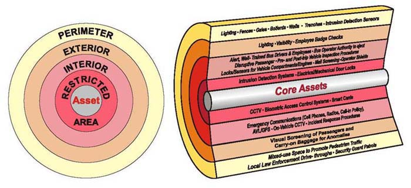

About @dpp
- Founded Lift web framework
- Wrote a bunch of commercial spreadsheets
- Former CTO/VP Eng Cenzic
- Founder/Consultant Brick Alloy
- Crazy passionate lawyer-trained tech dude
Visi
- Spreadsheety/Big Data Analytics
- As all spreadsheety things, user-written logic
- How to secure something that compiles to bytecode and executes on a cluster?
Notable Security Failures
Failures to interpret data
- Injection: occurs when an application sends untrusted data to an interpreter
- XSS: occurs when an application includes user supplied data in a page sent to the browser without properly validating
- CSRF: allows the attacker to force the victim’s browser to generate requests the vulnerable application thinks are legitimate requests from the victim.
NEVER trust what's on the wire
What
if
what's
on
the
wire
is
Turing
Complete?
Turing Complete
==
Executable Code
“Real” Programs
- If it's Turing Complete, it can do anything
- No matter what you think, securing Turing complete is hard
- Out damned spot: you can't “clean” the program
Let's talk Securing Things
How do you truly secure data?
Add a lot of entropy
How do you secure data
and make it accessible?
Layers
Layers in Physical Security

Security:
Mentality and Granulatity
- Hiring Replaceable
PartsPeople
- Security folks are paranoid: always thinking attack vectors
- JVM Security Manager: too granular
- Intending Consequences: getting it right by default
PaaS is Different
Protecting users from other users
- User code needs some access
- Multitenant
- Usage: Metering/Logging/Throttling
We have a Picture
- Isolate Each Tenant
- “LAN” for per-tenant services
- Careful attachment to shared services
Share with Care
- Shared services subject to attack
- Attempt read-only & write-only services
- Write-Only: Logging
- Read-Only: Shared “master data”
- Write-Only: Alerting services
- Careful attachment to shared services
- Forbid Cross-LAN Traffic
Picture ⇒ Model
- Containers run each app/service
- Virtual LANs wire per-tenant apps & services
- Sounds like Docker and Weave… finally/yay!
Mechanics
- Each app and each local-to-tenant service in its own Docker Container
- Each tenant on their own Weave subnet
- Shared services on each subnet
Well… a little fudging
- RDBMS should be shared with table/column access controls handled by RDBMS
- Read/write HDFS may be shared with access controls
- Standard: I/O heavy services with well defined security models may be shared
- Per Tenant Credentials that are not globally visible
Security & Threat Models
- Modes:
- App to host via code
- App to host via network
- App to app via network
- App to shared services
- Docker instances reasonably well isolated from host
- Weave subnets isolate containers
- Services: credentials & per-service security
Key settings
/etc/default/docker
add
--icc=false
to DOCKER_OPTS: No intercontainer communication except via Weave
sudo weave run 10.0.1.3/24 \
--net='none' -d -it \
-dockerfile/java /bin/bash
for containers that do not need to see the world- Weave subnets isolate containers
- Services: credentials & per-service security
Wrap Up
- Machines ⇒ Virtualization ⇒ Containers
- Network Isolation 'cause TCP/IP just works
- A layer in the security model